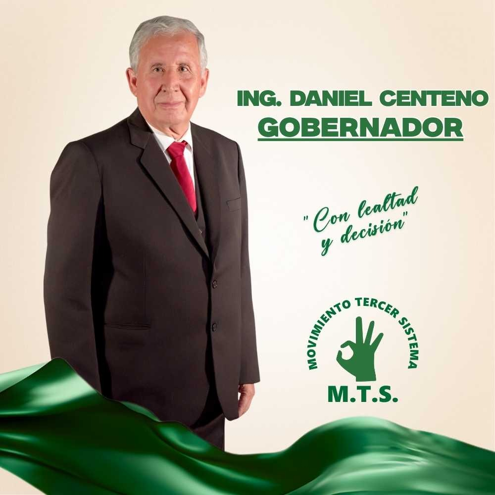
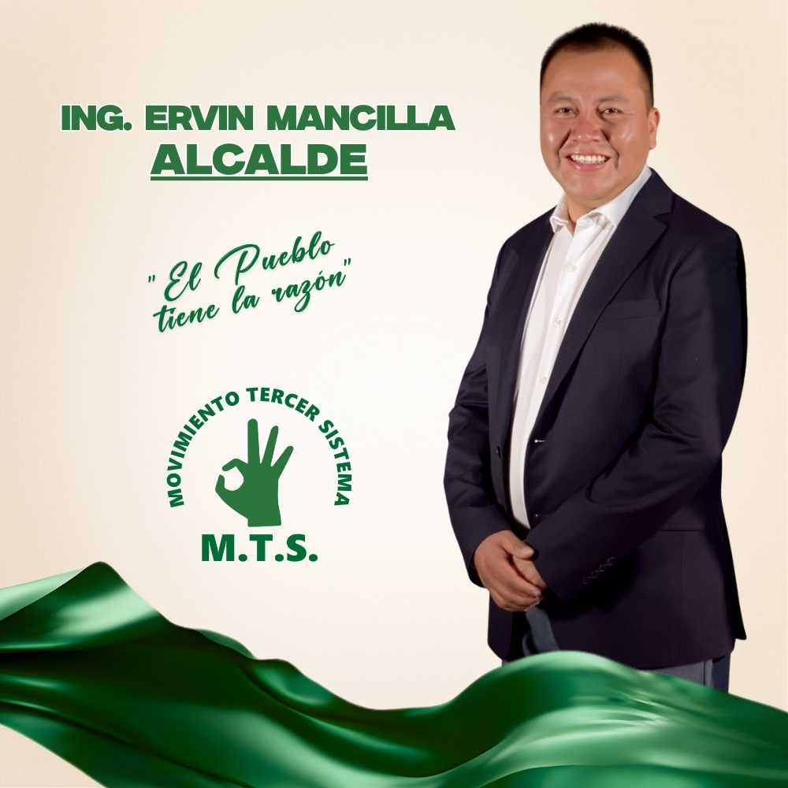

Candidato
a la Gobernación
Ing. Daniel Centeno
"Con lealtad y decisión"
1. Desarrollo Humano y Justicia Social
2. Economía Sostenible
3. Integración e Infraestructura
4. Agua y Medio Ambiente
5. Autonomía y Gobernanza

Candidato
a la Alcaldía (Cercado)
Ing. Ervin Mancilla
"El pueblo siempre tiene la razón"
1. Tarija Ordenada y Moderna
2. Tarija Digna y Segura
3. Tarija Social y Solidaria
4. Tarija Turística y Próspera
5. Tarija Institucional
Carlos Bru
Ejecutivo del Gran Chaco
Enfocados en la integración regional y el desarrollo de nuestro Chaco. Tarija unida es una Tarija más fuerte.
Únete a la integraciónPropuestas Clave
Nuestra compromiso con el bienestar de cada tarijeño
Salud
Hospitales equipados y atención digna sin colas.
Agua
Agua potable para todos los barrios y comunidades.
Empleo
Apoyo a emprendedores y reactivación económica real.
Seguridad
Barrios seguros con vigilancia y tecnología moderna.
Sé parte del cambio
Tarija nos necesita unidos. Tu apoyo es fundamental para construir el futuro que soñamos.
¿Por qué sumarte?
- Participa en mesas de trabajo
- Apoya en despliegue territorial
- Difunde nuestras propuestas